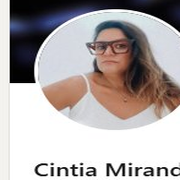
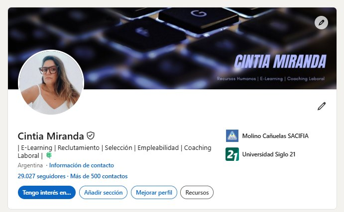
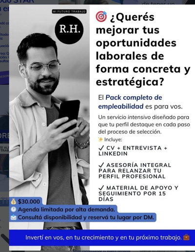
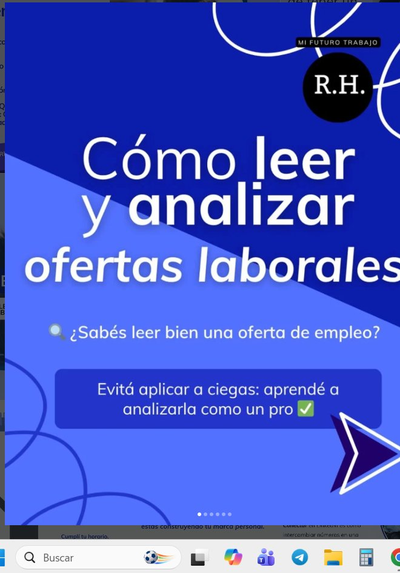
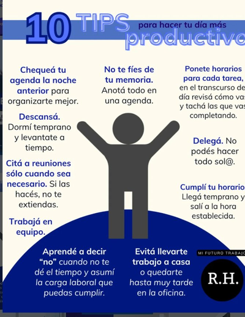
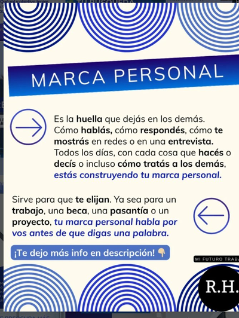

Tu próximo trabajo está más cerca de lo que pensás.
Te acompaño a identificar oportunidades, mejorar tu perfil profesional y desarrollar una estrategia laboral adaptada a tu realidad.
No todas las personas necesitan lo mismo. Por eso comenzamos entendiendo tu situación antes de recomendar cualquier servicio.

Cada proceso es distinto. Empecemos por entender el tuyo.

Hola, soy Cintia
Creé Mi Futuro Trabajo porque conocí muchas personas con experiencia, talento y potencial que no estaban ocupando el lugar que merecían en el mercado laboral.
Descubrí que muchas veces no falta capacidad, sino herramientas para mostrar su valor y acercarse a mejores oportunidades.
Por eso ayudo a las personas a reconocer sus fortalezas, comunicar su experiencia y avanzar con más claridad en su desarrollo profesional.

Empecemos por entender tu situación
Cada persona tiene desafíos, objetivos y experiencias distintas.
No trabajo con soluciones genéricas.
Por eso la entrevista diagnóstica es el primer paso para identificar qué necesitás y definir una estrategia adaptada a tu realidad.
- 1 Claridad sobre tu situación
- 2 Identificación de oportunidades
- 3 Recomendaciones profesionales
- 4 Definición de próximos pasos
- 5 Orientación personalizada
Entrevista diagnóstica
Una conversación inicial para revisar tu perfil, tu objetivo profesional y definir juntos el mejor camino a seguir.
Acá elegís día y horario directamente, sin ida y vuelta de mensajes.
Ver disponibilidad →Conseguir trabajo no es un paso. Es un proceso.
Cada etapa tiene un objetivo diferente. Entenderlas te ayuda a prepararte mejor y aumentar tus posibilidades de avanzar.
Muchas personas creen que el objetivo es conseguir trabajo. Sin embargo, antes de una contratación existen distintas etapas que requieren preparación, y cada una necesita herramientas diferentes. Tocá cada etapa para conocerla mejor.
Definir el objetivo profesional
Antes de buscar trabajo es importante entender qué tipo de oportunidades buscás, cuáles son tus fortalezas y qué dirección querés darle a tu carrera.
Servicio: Orientación laboralConstruir un CV que genere entrevistas
El objetivo del CV no es conseguir trabajo. El objetivo del CV es conseguir una entrevista.
Servicio: Armado y optimización de CVDesarrollar tu presencia profesional
Muchas oportunidades aparecen antes de que envíes un CV. Tener una presencia profesional adecuada puede ayudarte a generar más visibilidad.
Servicio: LinkedIn estratégicoRealizar una búsqueda laboral estratégica
No se trata solamente de enviar currículums. Se trata de identificar oportunidades adecuadas y postularse de manera inteligente.
Servicio: Asesoramiento para búsqueda laboralConseguir la entrevista
Cuando el CV funciona, aparece una nueva etapa. Ahora el desafío es demostrar en una conversación lo que reflejaste en el papel.
Servicio: Simulación de entrevistasEntrevista con Recursos Humanos
Se evalúan motivación, experiencia, competencias y compatibilidad con la organización. Básicamente, a vos como persona.
Entrevista técnica o con el área
Se evalúan conocimientos, experiencia y capacidad para desempeñar el puesto. A vos como trabajador.
Evaluaciones complementarias
Según la empresa pueden existir pruebas técnicas, evaluaciones psicotécnicas, socioambientales, assessment center, dinámicas grupales, casos prácticos o presentaciones.
Exámenes preocupacionales
Etapa habitual previa a la contratación.
Ingreso a la empresa
La contratación es el resultado de haber recorrido correctamente las etapas anteriores y entender que en cada etapa podés quedar afuera del proceso. ¿Te parece fácil? ¡No lo es!
Herramientas para cada etapa del proceso
No todas las personas necesitan lo mismo. Por eso cada servicio responde a una necesidad específica dentro de una estrategia laboral más amplia.
Orientación laboral personalizada
Definí objetivos claros y diseñá una estrategia profesional acorde a tu realidad.
Consultar por WhatsAppArmado y optimización de CV
Construimos o mejoramos tu CV para que refleje claramente tu experiencia, habilidades y objetivos.
Consultar por WhatsAppLinkedIn estratégico
Aprendé a utilizar LinkedIn para aumentar tu visibilidad profesional y generar nuevas oportunidades.
Consultar por WhatsAppSimulación de entrevistas laborales
Practicá entrevistas reales, recibí devoluciones y preparate con mayor confianza.
Consultar por WhatsAppAsesoramiento para búsqueda laboral
Aprendé a organizar tu búsqueda y mejorar la calidad de tus postulaciones.
Consultar por WhatsApp¿No sabés por dónde empezar?
La entrevista diagnóstica te ayuda a identificar qué servicio se ajusta mejor a tu situación actual.
Reservar entrevista diagnóstica¿Cómo es el proceso?
Reservás una entrevista diagnóstica
Analizamos tu situación
Identificamos oportunidades de mejora
Definimos prioridades
Te recomiendo el servicio más adecuado
Trabajamos juntos para acercarte a tus objetivos
Antes de empezar
Si tenés alguna duda que no esté acá, escribime directamente por WhatsApp.
Escribir por WhatsAppNo, no es necesario tener experiencia laboral. Lo que sí hace falta son ganas de mejorar y compromiso con tu propio desarrollo. A partir de ahí, trabajamos juntos para potenciar las habilidades que ya tenés y construir un camino que te acerque a tus objetivos.
Sí. Podemos trabajar juntos para que puedas reflexionar, conocerte mejor y pensar con claridad los próximos pasos, usando herramientas de coaching. No se trata de decirte qué carrera elegir, sino de ayudarte a decidir si el camino que estás dejando — o el que estás considerando — es realmente el que querés para el resto de tu vida.
Sí, es obligatoria, porque es la única manera que tenemos de entender quién sos y qué estás buscando realmente, incluso si todavía no lo tenés del todo claro. Por más que nos compartas tu CV o ya tengas una idea en mente, necesitamos reflexionar juntos y analizar esa idea para poder armar la mejor estrategia para tu caso.
Si ya tenés un CV, mejor todavía: podemos compararlo con quién sos realmente y pensar juntos cómo mejorarlo. No se trata solo de hacerte un CV nuevo con cambios puntuales, sino de entender por qué se hacen esos cambios y cuál es la estrategia detrás de cada decisión.
Sí, es un servicio rápido y muy útil para sacarte del apuro antes de una entrevista real. Sirve para cortar con la ansiedad, aflojar un poco, y salir con una reflexión que te ayude a estar mejor preparado para el momento real.
Sí, trabajamos con personas de cualquier edad, porque nunca se sabe en qué momento alguien decide cambiar, empezar de nuevo, entender mejor su situación o armar una estrategia. Eso puede pasar en cualquier etapa de la vida.
No es necesario. LinkedIn es una herramienta valiosa y potente, pero no le sirve a todas las personas por igual. Tiene sentido si realmente pensás usarla y mantenerla activa: abrir un perfil y dejarlo abandonado no tiene mucho sentido.
Depende del servicio. Por ejemplo, un CV puede estar listo en unos 5 días hábiles desde el primer contacto si la comunicación fluye bien. Una simulación de entrevista puede resolverse el mismo día que te contactás. Las sesiones de coaching suelen recomendarse entre 8 y 10 encuentros semanales aproximadamente.
Contenido gratuito para potenciar tu búsqueda laboral
Compartimos consejos prácticos sobre entrevistas laborales, empleabilidad, LinkedIn y desarrollo profesional.




¿Tenés dudas antes de reservar?
Escribime y te respondo a la brevedad. Si ya sabés qué necesitás, también podés reservar directamente tu entrevista diagnóstica.
Enviar una consulta
Empezá por una conversación
Entender tu situación actual puede ser el primer paso para construir nuevas oportunidades.
Reservar entrevista diagnóstica